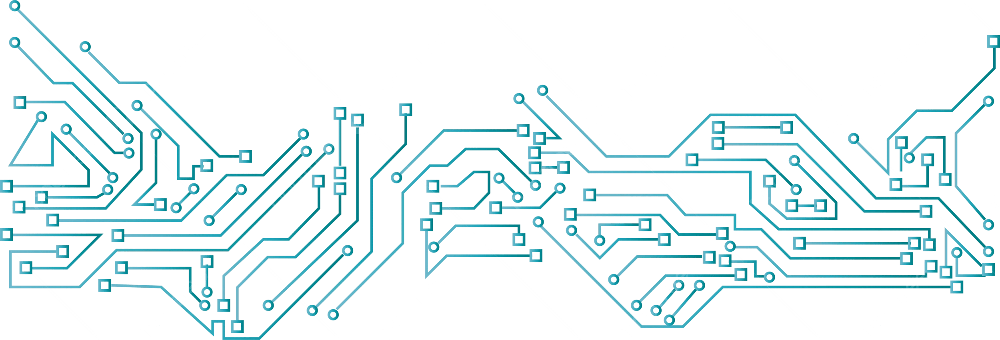

DIGITAL ELECTRONIC CIRCUITS LAB
Department of Electronics & Communication Engineering
Course: Electronic Digital Circuits Fundamental Lab
Lab In-Charge: Ms. Dhoomal Mam
Department of Electronics & Communication Engineering
Course: Electronic Digital Circuits Fundamental Lab
Lab In-Charge: Ms. Dhoomal Mam
Welcome! This lab is designed for hands-on experience, bridging the gap between digital logic theory and practical circuit implementation. Our goal is to provide a safe, structured environment to solidify your foundational understanding of digital electronics.
The lab is approximately **750 sq. ft.** (30 ft x 25 ft) and optimized for collaborative learning. The main area features **two giant workbenches** with ergonomic seating. The facility is well-ventilated, and two private staff cabins are strategically located for immediate guidance.

For clear navigation and safety awareness, please review the provided layout diagram which details the Entrance, Staff Cabins, Work Tables, Equipment Storage, Power Panel, and Emergency Exit points.


Ms. Dhoomal Mam holds a Ph.D. in Digital Electronics and specializes in circuit analysis and systematic debugging. Her office is in the **Primary Staff Cabin**. She ensures expert instruction and is available during consultation hours for advanced academic and project assistance.
**Location:** Primary Staff Cabin | **Email:** [Provide Email] | **Consultation:** [Provide Hours]
The Lab Technician and Teaching Assistants (TAs) provide crucial technical and educational support. They are your first line of support for equipment setup, maintenance, and immediate procedural troubleshooting during lab sessions.

Strict adherence to safety guidelines is required for all personnel.
Each station has a **Breadboard** for circuit assembly, a **DC Regulated Power Supply** (+5V for TTL ICs), **Connecting Wires**, and kits containing common **Digital ICs** (7400, 7404, 7476, etc.).
Accurate measurement is critical. You will use the **CRO** to visualize and measure digital waveforms and timing. The **Digital Multimeter (DMM)** is used for static voltage checks and continuity. The **Function Generator** provides stable clock signals (square waves) for sequential circuit testing.

Specialized training tools, such as Experimental T.V.s, are reserved for advanced application experiments. Specific instruction on their use will be provided by staff.
The curriculum focuses on fundamental combinational and sequential logic circuits using TTL ICs.
| No. | Experiment Title | Objective |
|---|---|---|
| 1 | Verification of Basic Logic Gates | To verify the truth tables of fundamental gates: AND, OR, and NOT. |
| 2 | Universal Gates Implementation | To realize all basic logic operations using only NAND or NOR gates. |
| 3 | Combinational Logic: Half/Full Adder | To design, construct, and verify the operation of Half Adder and Full Adder circuits. |
| 4 | Combinational Logic: Half/Full Subtractor | To design, construct, and verify the operation of Half Subtractor and Full Subtractor circuits. |
| 5 | Implementation of Multiplexer (MUX) | To implement and verify a 4:1 Multiplexer. |
| 6 | Implementation of Demultiplexer (DEMUX) | To implement and verify a 1:4 Demultiplexer. |
| 7 | Study of Flip-Flops | To construct and verify the characteristic tables of SR, D, and JK Flip-Flops. |
| 8 | Asynchronous (Ripple) Counter Design | To design and implement a 4-bit Asynchronous Counter and observe the timing. |
| 9 | Synchronous Counter Design | To design and implement a 4-bit Synchronous Up/Down Counter. |
| 10 | Shift Register Implementation | To construct and verify the operation of a 4-bit Serial-In Parallel-Out (SIPO) Shift Register. |